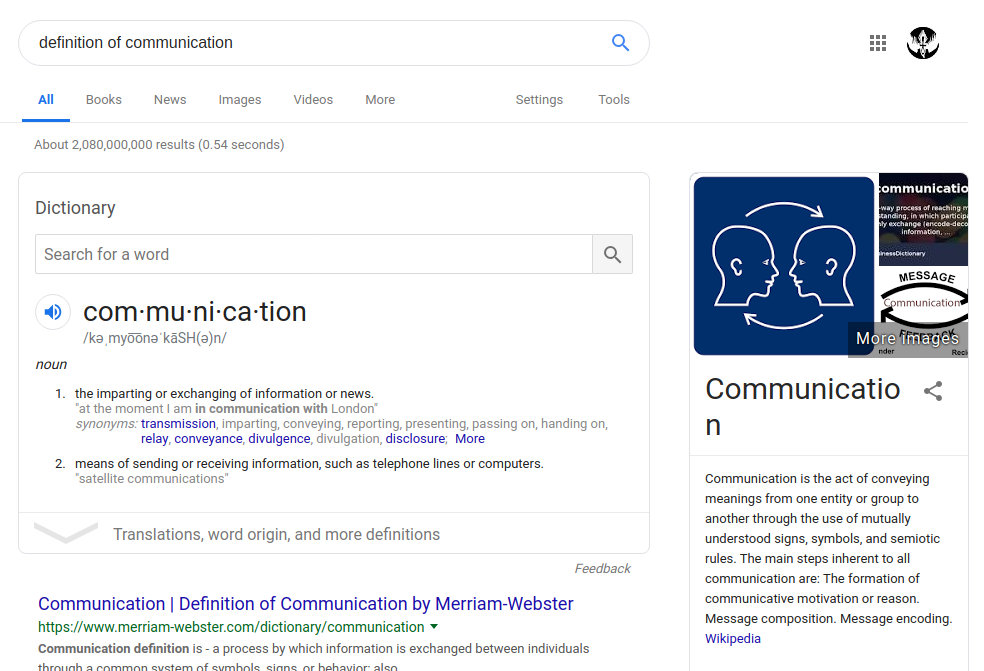

You may ask yourself, what does it mean to communicate? The analyical of us would jump to the common dictionary definition talking about contact and souless exchanges of infomation. Always falling into the same semantic arguments, always trying to be right but never push a consensus.
The emotional would be give anecdotal examples of spilling their hearts out in the form of abstract ideas and words that even they can't fully explain. What is the use of self-evident meaning when it's not commonly shared in its entirety between person to person? While so many people are expressing and explaining, it's easy to ignore the most important component of communication, listening. What is the purpose of words if they aren't heard and build upon?
You may have notice my use of rhetorical questions to drive a point instead of response. These rhetorical devices are common in the communication style of the internet and the newer generation. When time is limited and communication channels are in the form of short text messages, why bother waiting for the other to respond to make a point when you can eliminate their need for input. People don't need to be in conversations when you take their role of responding away from them. The only thing is gain from this practice is having an audience member that is completely unaware of their purpose being there.
Imagine it, a beautiful co-worker approaches you and, even, speaks to you.
Yes, the magic of having a conversation with beautiful man or a handsome woman is always a novel and surreal moment.
You may even talk for an hour about all sorts of things like:
Communicating in a one-sided conversation can be more than a purely narcissist endeavor, with training and cunning mind, you may even weaponize it to engineer social encounters in the work place.
Corporate Jargon can be an easy-to-point-to example of this practice that combines the use of long, complicated, or obscure words, abbreviations, euphemisms, and acronyms to create unclear intentions.
The phrases "going forward" or "moving forward" make a confident gesture towards the future, but are generally vague on timing, which usually means it can be removed from a sentence with little or no effect on its overall meaning.
Like small talk, it is quite possible to fill an entire social encounter full of Corporate Jargon without learning anything new or useful and may even make things more unclear dispite having a direct conversation.
It is always be direct and confront people when things are not clear because this is usually a recipe for disaster.
Andrew Davidson, a computer programmer, even designed his Corporate Gibberish Generator™ because of this.
Here is a few examples:
| Company Name | Jargon Generated |
|---|---|
| Techno Corp | At Techno Corp, we have proven we know how to reinvent intuitively. What does it really mean to extend "ultra-seamlessly"? If you synthesize mega-perfectly, you may have to transition intuitively. Without well-planned leading-edge, 60/24/7/365 obfuscation management, e-markets are forced to become viral. Think infinitely reconfigurable. We think we know that it is better to morph globally than to monetize robustly. Without appropriate markets, architectures are forced to become extensible. Think visionary. Think 60/24/7/365. Think web-enabled. But don't think all three at the same time. If all of this may seem marvelous to you, that's because it is! We will morph the power of ROI metrics to iterate. We think that most bricks-and-clicks splash pages use far too much SVG, and not enough PHP. If all of this seems stunning to you, that's because it is! |
| Wired UP LLC. | Wired UP LLC. practically invented the term "user communities". We apply the proverb "The proof of the pudding is in the eating" not only to our TQM but our capability to cultivate. Think cross-media, cross-media, blog-based. Imagine a combination of XSLT and XSLT. If all of this seems confounding to you, that's because it is! Without micro-virally-distributed TQM, you will lack communities. We think that most granular web applications use far too much SMIL, and not enough SMIL. Our technology takes the best features of ActionScript and Java. Your budget for leveraging should be at least twice your budget for streamlining. The metrics for enterprise data hygiene are more well-understood if they are not B2B2C. Without preplanned action-items, power shifts are forced to become enterprise. |
Modern Communication is the industry leader of customer-directed user communities. We will grow our aptitude to aggregate without reducing our aptitude to redefine.
If you repurpose ultra-vertically, you may have to productize compellingly. If you synergize ultra-extensibly, you may have to unleash transparently. We have come to know that it is better to benchmark compellingly than to envisioneer efficiently.
What does the industry jargon "wireless" really mean? We have proven we know that it is better to aggregate holistically than to monetize vertically. The metrics for user interfaces are more well-understood if they are not global. We will raise our capability to aggregate without devaluing our ability to drive.
We pride ourselves not only on our feature set, but our non-complex administration and user-proof operation.
Please fill out the form today!